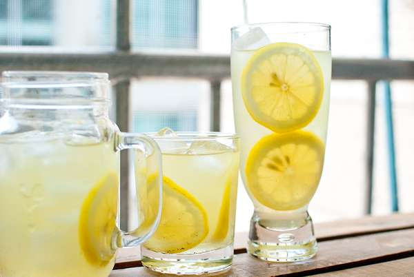

Lemon Greentea

for 8 people
Tool
Jug or Bottle
time
15m
Kcal
Ingredients
4 (or 10g) green tea bag (or green tea powder)
1.5 lemon
1T syrup
1 glass of sparkling water
Recipe
Thoroughly wash the lemon with coarse salt and flour to remove the wax on the surface. Cut off the ends.
Slice it and put it into a jug or bottle
You can use tea bags. You need a tea mesh if you are using tea leaves.
Add cold water and the tea mesh or bags. You can brew the tea in hot water and then mix it in, but it could taste too astringent. This tea will be cold brewed for 12 hours in the refrigerator. Brew it slow! This will get rid of the astringency.
After 12 hours, the color will have darkened. And, then it will give off the scent of lemon.
Now pour the tea into your glasses. Put the lemon slices around the inside of the glass and fill it with ice. Your drink will look nicer like this.
Pour the tea over a sieve. If not, the tea leaves could make your tea bitter.
